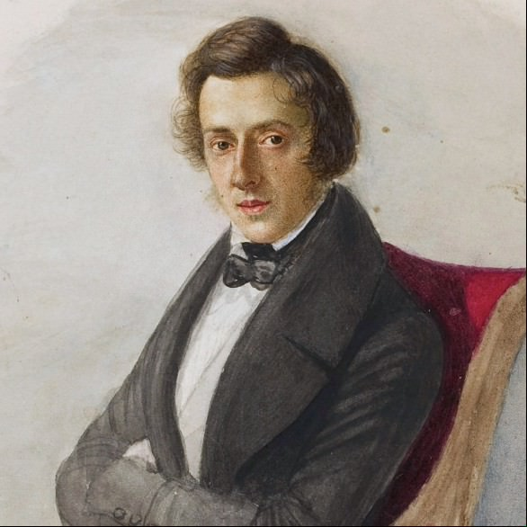

Hi! You probably stumbled upon this page by accidentally left-clicking the image of me with the panda (his name is Caleb) from the main page, which is secretly a button. That's actually the only way to access this page.
I'm not too sure what the future holds for this section of the website. As you can see, I currently only have a single "secret" project. I think it would be cool to periodically provide updates of my progress on long-term (3+ year) projects here.
Also please do let me know if you have suggestions for better colour schemes, this page looks pretty ugly :P
3 AUG 2023 - Present
It's been 6 years since I last visited my piano teacher. I've still been playing, but probably not improving very quickly. There are many songs I would like to play that are currently outside of my pay grade. By learning all 24 of Chopin's etudes I hope to improve my technical abilities, fix old bad habits, and build practice discipline in the hopes of mastering harder repertoire in the future!
